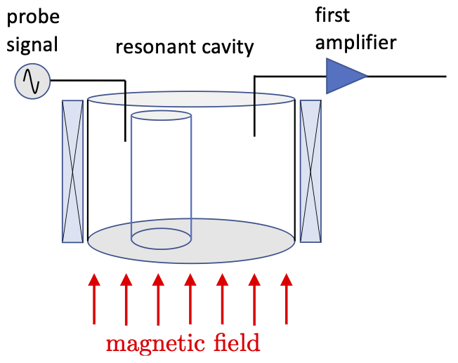
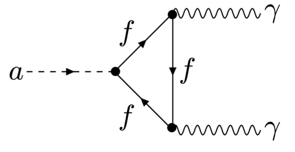

Axion detectors#
As discussed in my first lecture, axions having masses of order \(\rm 10\,\mu eV\) and velocities of order \(\rm 200\,km\,s^{-1}\) have De Broglie wavelengths of order \(\rm 100\,m\). The number density of axions in the halo is the rest energy density of approximately \(\rm 0.5\,GeV/cc\) divided by the axion mass, or around \(\rm 5\times10^{13}/cc\). Therefore the axion quanta have enormous overlap with one another, and we may treat the axions as wave-like.
Pierre Sikivie was the first to propose the axion haloscope. The idea is to exploit the form of the coupling between axions and electromagnetic waves and look for the conversion of an axion into a single real microwave/UHF photon in the presence of a large magnetic field. The figure below shows a schematic of a Sikivie-type resonant cavity haloscope, connected to the first stage of the electronics used to probe the detector for axion signals.

Recall the coupling of an axion to two photons that was drawn in the 1st lecture on theory.

The idea is that the axion field, present all around the detector in the halo of our galaxy, couples to the magnetic field threading the cavity. This coupling destroys the axion and creates a real photon. The second photon in the axion-photon coupling is supplied by the magnetic field.

The magnetic field can be modelled quantum-mechanically as a source of photons having zero frequency, but still carrying momentum. Classically this would be disallowed, since a zero energy photon also has zero momentum, but in quantum mechanics virtual particles do not have to have the conventional energy-momentum-mass relation. Such phenomena are sometimes referred to as off-mass-shell.
The energy from the incoming axion is dominated by its rest energy, \(\rm m_ac^2\). The incoming axion is annihilated and a real on-mass-shell photon results, having a frequency \(\nu\). The axion also has kinetic energy arising from its velocity, which is of order the virial velocity, \(\rm 230\,km\,s^{-1}\). Energy conservation implies that
Inserting some numbers, \(v^2/(2c^2)\) is \(\rm 3\times 10^{-7}\), Therefore, if there are multiple axions converting into photons, the result will be excess power in the magnetic field forming a narrow line having frequency given by \(h\nu=m_ac^2\), and a line width of \(3\times10^{-7}\) of the frequency.
Consider, for example, with a \(\rm 10\,\mu eV/c^2\) axion. The rest energy of this axion is converted into a frequency in \(\rm Hz\) by multiplying by \(\rm e=1.6\times10^{-19}\,J/eV\) and dividing by Planck’s constant, \(\rm h=6.63\times 10^{-34}\,Js\). In this case the result is \(\rm 2.4\,GHz\). This electromagnetic wave is in the microwave frequency range. The width of the emission line is about \(3\times10^{-7}\) of that, or \(\rm 720\,Hz\).
Resonant detection#
In Sikivie’s axion haloscope, the region in which the axions convert to photons, defined by the magnetic field, is surrounded by a metal resonant cavity. Such cavities possess electromagnetic resonances. The geometry of the cavity is that it is a circular cylinder, containing a secondary metal cylinder used to tune the resonances. Focusing on the cavity for now, we note that the metal walls define boundary conditions on the electromagnetic fields inside the cavity. The each component of the electric and magnetic fields can be shown to obey a wave equation, the solutions of which are waves constrained by the boundary conditions at the walls of the cavity. These boundary conditions lead to particular frequencies of electromagnetic radiation being resonant in the cavity.
Resonances are ubiquitous in physics. The principle of resonant enhancement can be understood by thinking about a pendulum suspended from your fingers. If you move your hand back and forth at the resonant frequency, the pendulum swings back and forth with an amplitude bigger than the motion of your hand by a numerical factor called the quality factor, \(Q\), of the pendulum oscillator. The factor \(Q\) depends on the quality of construction of the pendulum.
By analogy, the cavity enhances the signal from axion to photon conversion by a factor \(Q\), the quality factor of an electromagnetic resonance of the cavity, when the cavity is tuned so that this resonance has a frequency related to the axion mass by \(\rm h\nu=m_ac^2\). For the example considered above, we’d need a cavity that can support a \(\rm 2.4\,GHz\) resonance.
In reality, we don’t know the axion mass, so we must use a tunable resonator. The simplist way to achieve this is to insert another metal object, a tuning rod, into the cavity, and allow for it to be moved around, varying the distance of the cavity axis from the symmetry axis of the cavity. The necessity of a movable tuning rod is in fact one of the most difficult aspects of operating an axion haloscope. It is both hard to move at the low temperatures that turn out to be necessary, and furthermore tends to reduce the quality factor \(Q\) of the electromagnetic resonance, and thereby the sensitivity of the detector.
The picture below shows a view of the resonant cavity of the QSHS detector from above.

Signal power#
We will use a simplified model of the coupling of the axion field into the detector, where we model the detector as a resonant circuit, and the axion signal as a voltage source driving the circuit.

The voltage drive \(V_a(t)\) from the axion field is
where \(q\) is the magnitude of the charge on the plates of the capacitor modelling the stored energy in the cavity mode, \(\vec{E}\) is the electric field in the cavity mode, \(\vec{B}\) is the applied magnetic field, \(a\) is the axion field and \(g_{a\gamma\gamma}\) is the coupling constant between axions and photons. I have written that \(qV_a(t)\) is equal to \(H_{a\gamma\gamma}\), the Hamiltonian term representing the interaction between an axion and two photons in the cavity, because in fact that is exactly what this term represents. Note that the product \(g_{a\gamma\gamma}a(t)\) is dimensionless - it has no units. You can check for yourselves that the dimensions of the rest of the terms on the right are those of an energy in joules, the appropriate units for a term in the Hamiltonian.
Assuming that the applied magnetic field is uniform, \(\vec{B}=B_0\hat{z}\) we can write
The integral is essentially a feature of the cavity mode. It is the extent to which the electric field of the cavity mode is aligned with the axis over the volume of the cavity. This turns out only to be non-zero for a sub-class of the cavity modesl called the transverse magnetic, or TM modes. We define a geometric form factor, roughly analogous to the nuclear form factors we encountered in WIMP searches. It measures the extent of coupling of the axion field to the shape of the cavity mode, much as the nuclear form factor measures the amplitude for the WIMP interacting with a nucleus. The definition of the form factor is
We equate the energy stored in the cavity with the energy stored in the equivalent circuit, modelling the latter as the amount of energy stored in the capacitor.
We substitute this back into Equation 6.2 and obtain
We square Equation 6.1 to obtain
We substitute in Equation 6.3 and arrive at
Cancelling factors of \(q^2\) and \(\varepsilon_0\) we arrive at
The power \(P_{a\rightarrow\gamma}\) deposited in the equivalent circuit is \(V_a^2/R\), so
Now, for an \(RLC\) circuit, the angular resonant frequency in terms of the circuit parameters is \(\omega_0=1/\sqrt{LC}\), and the quality factor of the resonance is \(Q=(1/R)\sqrt(L/C)\). Multiplying these two identities together we get
Inserting this into Equation 6.6 we obtain
Notice that now all references to properties of the equivalent circuit, the voltage \(V_a\) of the drive, together the resistance, inductance and capacitance of the circuit elements, have been removed from the equation for power. The quantities that have replaced them, in particular the resonant frequency and quality factor of the resonance, can be determined experimentally by measuring the properties of the resonance of the cavity that was previously represented by the equivalent circuit.
Scaling the axion to photon conversion power for our local halo.#
This section shows you how to go from Equation 6.7, which is in watts, but doesn’t give you any physically meaningful scale for the axion field strength \(a^2\). In this section I bring in some results from axion theory and phenomenology to show you the path to a result where \(a^2\) is expressed in terms of the axion mass and coupling to photons. This is more useful for laboratory experiments.
As discussed at the start of this lecture, the quantity \(g_{a\gamma\gamma}^2a^2\) is dimensionless. \(g_{a\gamma\gamma}\) is the amplitude for axion to photon coupling, which is usually given using energy units, such that \([g_{a\gamma\gamma}]={\rm GeV^{-1}}\). Therefore the units of \(a^2\) had better be \(\rm GeV^2\) overall. However, we know that the power for axion to photon conversion is going to be proportional to \(\rho_H\), the halo density of dark matter, presuming that it is axions. The usual units of \(\rho_H\) are \(\rm GeV/cc\). How do wo express this halo density in energy units?
Halo density in energy units.#
We know that the energy \(E\) associated with a field oscillating at angular frequency \(\omega\) is \(E=\hbar\omega\). In terms of wave number, we have \(E=\hbar c k\), where \(k\) is the wave number. If we have an energy interval \(\Delta E\) measured in \(\rm eV\) units, this therefore corresponds to some wave number interval \(\Delta k\) in \(\rm cm^{-1}\) units. We can write, keeping track of the units with square brackets, that \(\Delta E\,{\rm [eV]}=\hbar c\,{\rm [eV\,cm]}\,\Delta k\,{\rm cm^{-1}}\). Using a higher precision than before, we have \(\hbar c ={\rm 0.197\,GeV\,fm}\). We have used more significant figures here than before because we’ll be converting \(\rm cm^3\) into \(\rm eV^{-3}\), so that any rounding error gets more significant with the cube. Therefore \(\hbar c = {\rm 0.197\times10^9\,eV\,fm}\). A femtometer \(\rm fm\) is \(\rm 10^{-13}\,cm\), so that \(\hbar c={\rm 0.\times10^9\times10^{-13}\,eV\,cm}\), or \(\rm 1.97\times10^{-5}\,eV/cm^{-1}\). We therefore have \(\rm \Delta E\,[eV]=1.97\times10^{-5}\,[eV\,cm]\,\Delta k\,[cm^{-1}]\).
Therefore a halo density of \(\rm \rho_H=0.45\,GeV/cc\) converts to \(\rho_H=\rm 0.45\times10^9\,{\rm [eV\,cm^{-3}]}\times (1.97\times10^{-5}\,{\rm[eV/(cm)^{-1}]})^3=3.44\times10^{-6}\,{\rm eV^4}\). This is the halo density in energy units. The fourth power arises because in pure energy units a length has inverse energy units, so that 1/volume has units of energy cubed.
Overall, then, our dimensionless quantity \(g_{a\gamma\gamma}^2 a^2\) is going to contain \(g_{a\gamma\gamma}^2\rho_H\), which has units of energy squared. What other quantity can appear to make it overall dimensionless? The obvious quantity is the axion mass, \(m_a\). If this axion mass is squared and in the denominator, then the power from axion to photon conversion in the cavity becomes
There is nothing to be concerned about here regarding the introduced factor of \(m_a\). All this does is change the definition of the coupling \(g_{a\gamma\gamma}\) to that which is commonly employed in axion theory. All the quantities in the parentheses can now be written in energy units, so that this quantity becomes a (model dependent) dimensionless number, which we can evaluate independent of the axion mass or other physical properties.
As I taught in my 1st lecture, the axion mass and the energy \(f_{\rm PQ}\) at which the Peccei Quinn symmetry broke are related. We work here in energy units, so that when I say mass I mean energy of the particle at rest. The most recent theoretical analysis papers connect a symmetry breaking energy of \(10^{12}\,{\rm GeV}=10^{21}\,{\rm eV}\) with an axion mass of \(5.707\times10^{-6}\,{\rm eV}\). Writing \(m_a f_{\rm PQ}=5.707\times 10^{-6}\,{\rm eV}\times 10^{21}\,{\rm eV}\) we obtain
Also taught in my first lecture, the axion to photon coupling is also related to the energy \(f_{\rm PQ}\). This relationship is written in terms of a model dependent number \(g_\gamma\), which is of order 1, but depends on exactly which QCD axion model you are using. \(g_\gamma\) is \(+0.97\) for KSVZ axions and \(-0.36\) for DFSZ axions. In general we write
where \(\alpha=1/137\) is the fine structure constant of atomic physics. We combine Equations 6.9 and 6.10 to eliminate the energy scale \(f_{\rm PQ}\) and express the axion to photon coupling in terms of its mass and the model dependent numerical parameter \(g_\gamma\).
Squaring this quantity and multiplying by \(\rho_H\), we obtain a dimensionless number, since the units cancel.
On the second line I have evaluated all the quantities on the first one. I have assumed that \(g_\gamma=0.97\), which is the scale for KSVZ axions. The resultant dimensionless scale is inserted into Equation 6.8 in place of the bracket.
We convert from \(\omega_0\) to \(f_0\), the resonant frequency in \(\rm Hz\), by factoring out the \(2\pi\) and scaling the prefactor with it.
If you use SI units for all the quantities on the right, the power for axion conversion into photons, if those axions are KSVZ axions, in Watts, will result. This is an incredible formula, as it takes the most esoteric particle theory and astrophysics, and produces from it a useful formula for how much power you can expect in a terrestrial experiment. Experimentalists often prefer to scale the dimensionful quantities using values that correspond to their expectations for what they can build. For example, suppose we were experimentalists working on the ADMX experiment. We would have a cavity volume of 220 litres, or \(\rm 0.22\,m^3\), a magnetic field of \(\rm 7.6\,T\), and resonant frequencies of around \(\rm 700\,MHz\). We’ve already assumed KSVZ axions, so that if \(g_\gamma\) differs from 0.97 we need to modify by the ratio of the actual \(g_\gamma\) to 0.97 squared, and similarly we’ve assumed a halo density of \(\rm 0.45\,GeV/cc\) so the power must be scaled by the ratio of \(\rho_H\) to this assumed number.
We first multiply out the numerical prefactor by \(c^2\varepsilon_0\), where \(c^2=9.0\times10^{16}{\rm m^2s^{-2}}\) and \(\varepsilon_0=8.85\times10^{-12}\,{\rm F\,m^{-1}}\) This leads to a modified dimensional prefactor of \(2.685\times10^{-36}\).
We now insert in both numerator and denominator numerical factors for the scale expected for the cavity, magnetic field, resonant frequency and Q. Scalings for \(g_\gamma\) and \(\rho_H\) were already assumed, so factors that correct for different values of these parameters are inserted without numerical compensation in the numerator. We arrive at
where on the last line the units of all quantities in brackets are the same in the numerator as the units of the scale in the denominator. The prefactor now gives a scale for the amount of power we might expect from a KSVZ axion in the ADMX detector. Similar scalings can be derived for other detectors with different cavities, search frequencies, magnetic fields, and so on.